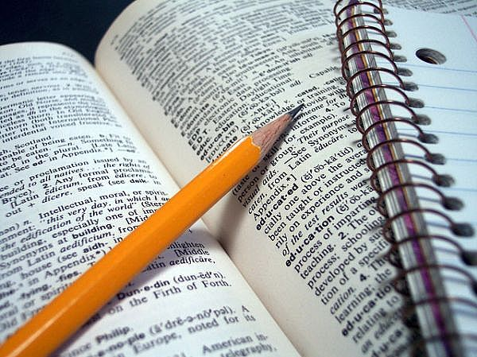
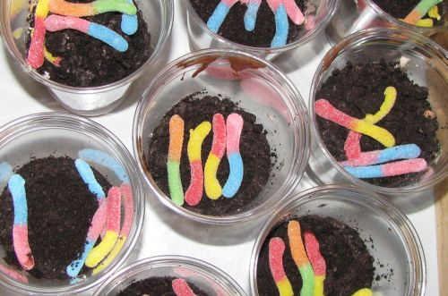
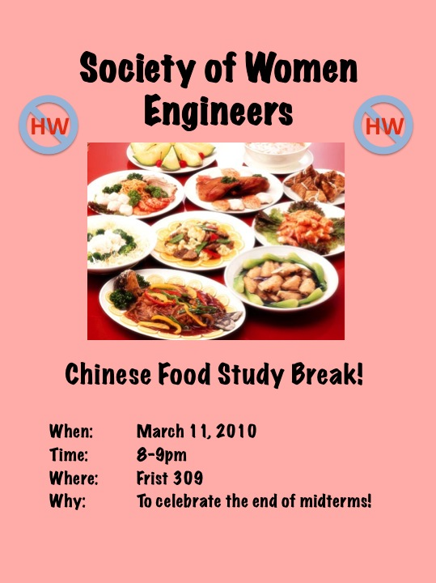

Events
Events
|
SWE Events - Past, Present, & even Future!
Spring 2012 High School Colloquium
Sunday April 15
The SWE High School Colloquium is coming up on April 15.
This is an event where we reach out to high school girls who might not otherwise have exposure
to the various engineering fields. One of the most important events of our group, we are always
looking for volunteers. In the coming weeks there will be opportunities to sign up to help out,
so please mark your calendar now!
Are you a high school girl interested in participating in SWE's High School Colloquium?
Sign up here!
Communiversity
Saturday April 30
More details TBA.
High School Colloquium
Saturday April 23
Want to be involved with SWE's spring High School Colloquium and help to keep engineering an option for interested high school girls? This is a good chance for us to
give many girls exposure to academic opportunities they may not even be aware exist, and a really great way for us to get involved in the greater community.
Princeton Preview + SWE!
Friday April 8 and 15
Join SWE in welcoming Princeton Pre-frosh with an ice cream social! Meet prospective Princeton freshies and talk to them
about the joys of engineering at Princeotn. Ice cream is sponsored by SEAS.
SWE Study Hall
Friday April 10, in Campus Club

Whether you need the social pressure to
motivate your studying or just room for all your books, this is the place to be.
Both
talking rooms for group review and silent study rooms will be available. Snacks
will be provided!
Dirt and Worm Cups Study Break!
Sunday April 3, 8-9pm in Frist 207

Come join SWE in making dirt and worm cups! This is a delicious
and fun break from studying that you don't want to miss!
Girl Scouts Event
Saturday March 26
Help SWE out by volunteering to expose young girl scouts to the values of science, technology and engineering. Volunteers will spend their time helping the girls to
achieve a badge by doing lots of fun activities and experiments. Email SWE@ if you are able to help at this event!
SWE Study Hall
Friday March 4, in Campus Club
Keep your calendars clear for this Friday, March 4th for our SWE Study Hall on the first floor of Campus Club. The Friday before midterms, this will be a
time to study with fellow engineers. Whether you need the social pressure to motivate your studying or just room for all your books, this is the place to be. Both
talking rooms for group review and silent study rooms will be available. Snacks will be provided!
Cupcake Study Break!
Sunday Feb 27, 8-9pm in Frist 207
Come join SWE in eating cupcakes! Meet the officers and other
members, sign up for projects you find interesting, and exercise your ability
to enjoy delicious foods!
Fall 2010 High School Colloquium: Minds in Motion
Saturday Dec 4, 2010
Calling all high school girls! Come spend a day with Princeton's
Society of Women Engineers and either acquire a new or reinforce your
old desire to be an engineer! We'll provide awesome food, exciting engineering
challenges, and the opportunity to chat with Princeton's female
engineers! You might also be able to get a free T-shirt out of the
ordeal....And yes, your parents are welcome to come too.
A Slice of SWE: Pizza Study Break!
Sunday Sept 26, 2010, 9-10pm
Meet & greet! Learn about & sign up for events!
Communiversity
Saturday April 24th, 2010, 11:30am-5:30pm
Sign up for a shift at THIS GOOGLE DOCUMENT. This year's activity
will feature making paper airplanes. The more SWE volunteers, the merrier!
Prefrosh Activities Fair
April 23rd, 2010, 4:00-5:30
We will be informing the prefrosh that they should go to Princeton just so they can participate
in Princeton's chapter of the Society of Women Engineers!
Spring 2010 High School Colloquium
April 10th, 2010
Hey high school girls! Wouldn't it be awesome to spend a day in at Princeton University with
a bunch of its [really cool] female engineers? Well, it's totally possible!
Just register with the link below and show up here on April 10th to spend a
memorable day learning about engineering, thinking like an engineer to perform
hands-on tasks, and chatting with us experienced female engineers!
Major Choices
April 9th, 2010
Not sure of your major? Meet departmental representatives & upperclassmen from different departments!
Girl Scouts Event
April 3rd, 2010
We will be helping a group of talented young ladies work towards their Science Badge. Right on!
Tiger Noodles Study Break!
March 11th, 2010 at 8pm in Frist 309

Take a break/celebrate the end of midterms with lo mein, fried rice, dumplings and much more!!!
T-Sweets Study Break!
February 26th, 2010
We female engineers took a break from our problem sets to get together do
do one thing that we all love -- eat ice cream & chat!